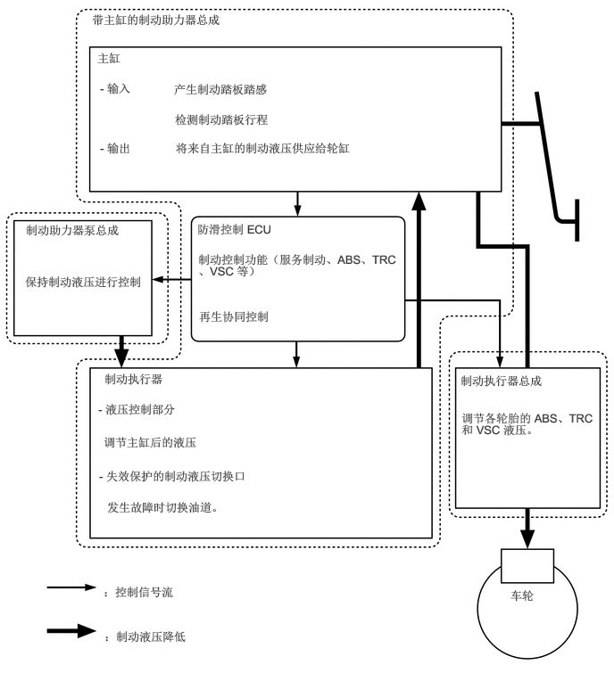
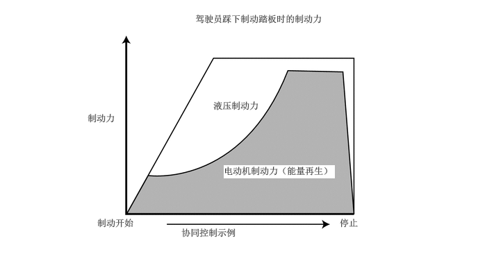
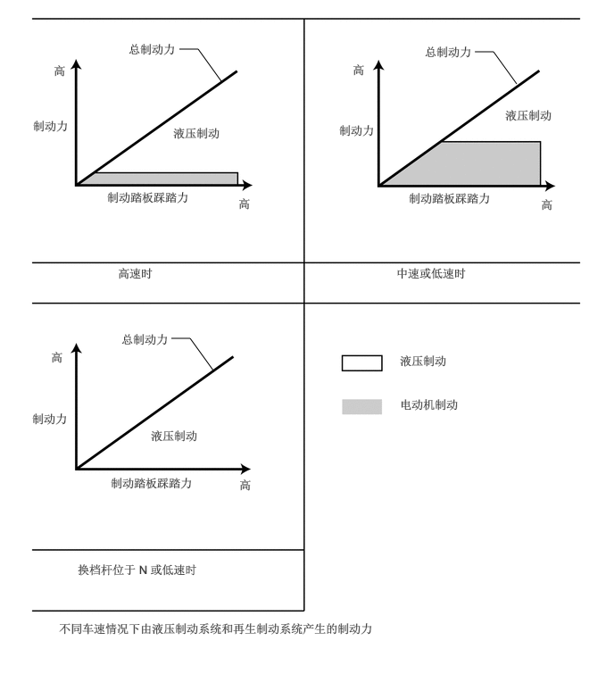

概要
配备以下制动控制系统：防抱死制动系统 (ABS)、电子制动力分配 (EBD)、制动辅助、牵引力控制 (TRC)、车辆稳定性控制 (VSC)、上坡起步辅助控制、制动保持、VSC 和与 EPS 协同控制、紧急制动信号和二次碰撞制动。
主要特征
电子控制制动系统
电子控制制动系统使用传感器检测制动踏板踩下程度。防滑控制 ECU 根据此情况计算制动力，带主缸的制动助力器总成、制动助力器泵总成和制动执行器总成控制 4 个车轮的制动液压。
电子控制制动系统与混合动力系统合作以对制动液压和再生制动进行最佳控制。这样可提高能量再生效率和燃油经济性。
系统发生故障时，其使用非故障零件继续进行制动控制。同时，系统不工作时，通过踩下制动踏板在制动主缸内产生的制动液压作为备用机构进行工作以确保制动力。

制动控制在以下所示的不同车速下将制动力分配至液压制动系统和再生制动系统。


注意事项
ABS
ABS 系统无法增加轮胎的性能限制。务必安全驾驶并注意车速及与其他车辆的距离。
安装非标准轮胎等任何非标准零部件可能会对 ABS 功能造成负面影响。
在以下情况下，使用 ABS 进行制动时，制动距离可能会比未配备 ABS 的车辆要长：
在脏污道路上或新雪覆盖的道路上行驶时
使用轮胎防滑链时
驶过路面接缝时
在不平整道路上行驶时，如未铺砌或石砌道路上
制动辅助
制动辅助无法增加基础制动系统的性能限制。务必安全驾驶并注意车速及与其他车辆的距离。
TRC、VSC
TRC 和 VSC 系统可确保牵引力和车辆稳定性。除非必要，否则不要禁用 TRC 或 VSC 功能。
TRC 和 VSC 系统无法增加轮胎的性能限制。在可能会失去驱动轮牵引力或车辆稳定性的情况下务必小心驾驶车辆。
上坡起步辅助控制
上坡起步辅助控制不用于长时间内使车辆在坡路上保持静止。由于上坡起步辅助控制仅在松开制动踏板后 2 秒内防止车辆后移，因此应在此期间起步。
上坡起步辅助控制工作且电源开关置于 OFF 位置时，上坡起步辅助控制将取消且不发出警告。
上坡起步辅助控制通过控制 4 个车轮的制动力防止车辆后移。但是，在极陡的斜坡或低摩擦表面（如冰）上时，车辆可能无法保持静止。
制动保持
制动保持不用于长时间驻车，如驻车制动器即是这样设计的。
制动保持工作且电源开关（按钮起动开关）置于 OFF 位置时，无需警告即可取消制动保持。
如果即使车辆停止制动保持也不工作，则用力踩下制动踏板。如果制动保持仍不工作，则检查工作情况。
制动保持可能无法使车辆在倾斜或光滑道路上保持静止。